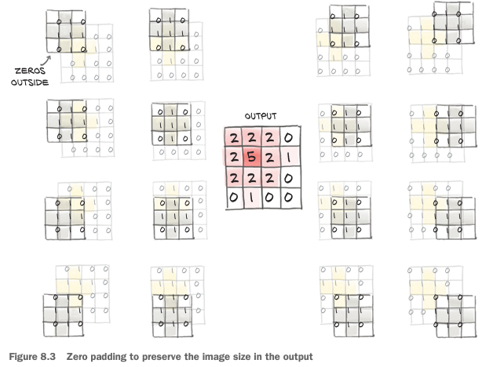

%matplotlib inline
from matplotlib import pyplot as plt
import numpy as np
import collections
import torch
import torch.nn as nn
import torch.nn.functional as F
import torch.optim as optim
torch.set_printoptions(edgeitems=2)
torch.manual_seed(123)
class_names = ['airplane','automobile','bird','cat','deer',
'dog','frog','horse','ship','truck']
from torchvision import datasets, transforms
data_path = '../data-unversioned/p1ch6/'
cifar10 = datasets.CIFAR10(
data_path, train=True, download=True,
transform=transforms.Compose([
transforms.ToTensor(),
transforms.Normalize((0.4915, 0.4823, 0.4468),
(0.2470, 0.2435, 0.2616))
]))
cifar10_val = datasets.CIFAR10(
data_path, train=False, download=True,
transform=transforms.Compose([
transforms.ToTensor(),
transforms.Normalize((0.4915, 0.4823, 0.4468),
(0.2470, 0.2435, 0.2616))
]))
label_map = {0: 0, 2: 1}
class_names = ['airplane', 'bird']
cifar2 = [(img, label_map[label])
for img, label in cifar10
if label in [0, 2]]
cifar2_val = [(img, label_map[label])
for img, label in cifar10_val
if label in [0, 2]]8장:컨볼루션을 활용한 일반화
8.1 컨볼루션
- 비행기 같은 물체와 일치하는 패턴을 인지하려면 인근 픽셀의 배열 방식을 살펴봐야한다
- 이 개념을 수학적인 형태로 바꾸려면 이미지 내의 다른 픽셀이 아닌 바로 옆 픽셀에 대한 가중치의 합을 계산하면 된다
- 출력 픽셀 위치마다 가중치 행렬을 만든는 것인데 센터가 되는 픽셀에서 일정 거리 떨어진 경우 가중치가 0이 되는 구조, 계산 결과는 여전히 가중치의 합이므로 선형 연산임
- translation invariance(평행이동 불변성): 지역화된 패턴이 이미지의 어떤 위치에 있더라도 동일하게 출력에 영향을 주는 성질
- 7장에서 했던 일차원 벡터는 패턴을 찾기 위해선 다소 복잡한 가중치 패턴 구현이 필요
- 이미지에 대해 지역적인, 평행이동 불변성을 보장하는 선형 연산 -> 컨볼루션
이산 컨볼루션은 2차원 이미지에 가중치 행렬을 스칼라곱을 수행하는 것으로 정의, 가중치 행렬은 커널이라고 부름
- 커널의 크기는 일반적으로 모든 방향으로 동일하게 만듬
- kernel_size = 3
- in_ch (입력 피처): RGB 채널을 가지니 픽셀당 3개의 입력 피처
- out_ch(출력 피처): 임의로 16을 전달
conv = nn.Conv2d(3, 16, kernel_size=3)
convConv2d(3, 16, kernel_size=(3, 3), stride=(1, 1))- weight 텐서의 차원 정보
- 커널은 3 x 3 이므로 가중치 역시 3 x 3 사용
- 출력 픽셀 값 하나에 대한 커널: in_ch x 3 x 3
- 그리고 이 값을 출력 채널만큼 가지게 된다: out_ch = 16
- 전체 가중치 텐서 out_ch x in_ch x 3 x 3
- out_ch x in_ch x kernel_size x kernel_size
conv.weight.shape, conv.bias.shape(torch.Size([16, 3, 3, 3]), torch.Size([16]))# 출력 이미지 가중합
img, _ = cifar2[0]
output = conv(img.unsqueeze(0))
img.unsqueeze(0).shape, output.shape # 기존 이미지의 차원(C x H x W), 컨볼루션 전달 후 차원(torch.Size([1, 3, 32, 32]), torch.Size([1, 16, 30, 30]))# 이미지의 크기가 줄어든 것을 확인할 수 있다.
plt.figure(figsize=(10, 4.8)) # bookskip
ax1 = plt.subplot(1, 2, 1) # bookskip
plt.title('output') # bookskip
plt.imshow(output[0, 0].detach(), cmap='gray')
plt.subplot(1, 2, 2, sharex=ax1, sharey=ax1) # bookskip
plt.imshow(img.mean(0), cmap='gray') # bookskip
plt.title('input') # bookskip
plt.savefig('Ch8_F2_PyTorch.png') # bookskip
plt.show()8.2 경계 패딩하기
- 3 x 3 이웃 여역에 대해 컨볼루션 커널을 가중합으로 적용하려면 일단 모든 방향에 값이 존재한다는 가정이 있어야 한다!!
- padding=1 을 통해 가짜 픽셀을 패딩한다

# 패딩시킨 코드
conv = nn.Conv2d(3, 16, kernel_size=3, padding=1)
output = conv(img.unsqueeze(0))
img.unsqueeze(0).shape, output.shape(torch.Size([1, 3, 32, 32]), torch.Size([1, 16, 32, 32]))bias는 0으로 제거해 교란 변수를 배제, 가중치에 상수값을 넣어서 출력에서 각 픽셀이 자신의 이웃 픽셀에 대한 평균을 가지게 해보자
with torch.no_grad():
conv.bias.zero_()
with torch.no_grad():
conv.weight.fill_(1.0 / 9.0)# 가중치는 이웃 픽셀에 대한 평균
output = conv(img.unsqueeze(0))
plt.figure(figsize=(10, 4.8)) # bookskip
ax1 = plt.subplot(1, 2, 1) # bookskip
plt.title('output') # bookskip
plt.imshow(output[0, 0].detach(), cmap='gray')
plt.subplot(1, 2, 2, sharex=ax1, sharey=ax1) # bookskip
plt.imshow(img.mean(0), cmap='gray') # bookskip
plt.title('input') # bookskip
plt.savefig('Ch8_F4_PyTorch.png') # bookskip
plt.show()
# 가로로 인접한 두 영역 사이의 수직 경계를 탐색하는 가중치
output = conv(img.unsqueeze(0))
plt.figure(figsize=(10, 4.8)) # bookskip
ax1 = plt.subplot(1, 2, 1) # bookskip
plt.title('output') # bookskip
plt.imshow(output[0, 0].detach(), cmap='gray')
plt.subplot(1, 2, 2, sharex=ax1, sharey=ax1) # bookskip
plt.imshow(img.mean(0), cmap='gray') # bookskip
plt.title('input') # bookskip
plt.savefig('Ch8_F4_PyTorch.png') # bookskip
plt.show()
이미지가 매우 클 때는?
kernel_size가 3 또는 5를 사용했는데 이미지가 크다면 지역성의 한계를 가진다
- 더 큰 컨볼루션 커널을 사용 -> 컨볼루션의 장점을 잃어버리게 된다.
- 다운샘플링!
- 다운샘플링 - 네 개의 픽셀을 평균: 초기에는 평균 풀링을 많이 사용했지만 요즘은 잘 사용하지 않는다 - 네 개의 픽셀 중 최댓값: 맥스 풀링은 요즘에 많이 사용하지만, 데이터의 3/4을 버린다는 단점 - 맥스 풀링: nn.MaxPool2d 모듈에 있다. 입력으로 풀링 연산을 수행할 인접한 영역 크기를 받음 - nn.MaxPool2d(2) -> 크기를 절반으로 줄임
# pool은 이미지 절반으로 줄인다
pool = nn.MaxPool2d(2)
output = pool(img.unsqueeze(0))
img.unsqueeze(0).shape, output.shape(torch.Size([1, 3, 32, 32]), torch.Size([1, 3, 16, 16]))
더 나은 성능을 위해 컨볼루션과 다운샘플링 결합

model = nn.Sequential(
nn.Conv2d(3, 16, kernel_size=3, padding=1),
nn.Tanh(),
nn.MaxPool2d(2),
nn.Conv2d(16, 8, kernel_size=3, padding=1),
nn.Tanh(),
nn.MaxPool2d(2),
# ...
)model = nn.Sequential(
nn.Conv2d(3, 16, kernel_size=3, padding=1),
nn.Tanh(),
nn.MaxPool2d(2),
nn.Conv2d(16, 8, kernel_size=3, padding=1), # 8개 채널로 출력
nn.Tanh(),
nn.MaxPool2d(2),
# ... 뭔가 중요한게 하나 빠졌다!
nn.Linear(8 * 8 * 8, 32), # 8
nn.Tanh(),
nn.Linear(32, 2))- 선형 계층의 크기가 MaxPool2d의 출력 크기 8 x 8 x 8 에 의존
- (C x H x W 구조) 초기: 3 x 32 x 32 -> (두 번의 맥스 풀링, 마지막 Conv2d의 출력 피처:8) 8 x 8 x 8
model(img.unsqueeze(0))RuntimeError: mat1 and mat2 shapes cannot be multiplied (64x8 and 512x32)- RuntimeError: mat1 and mat2 shapes cannot be multiplied (64x8 and 512x32)
- 위같은 에러가 생기는 이유는 8 x 8 이미지를 512요소를 가진 1차원 벡터로 차원 정보를 변경해야 한다
8.3 nn.Module 서브클래싱하기
- 이번 절의 핵심내용은 nn.Module의 서브클래스를 직접 만드는 법을 배워서 이미 만들어져 있는 것이나 nn.Sequential처럼 사용한다
- nn.Module을 서브클래싱하려면 먼저 forward 함수를 정의하여 모듈로 입력을 전달하고 출력을 전달하게 해야 한다
- torch 연산을 사용하기만 한다면 자동미분 기능이 자동으로 역방향 경로를 만들어준다.
- 그래서 nn.Module에는 backward가 필요 없다
뒤에서 만들 연산도 결국은 컨볼루션 같은 이미 있는 모듈을 사용한다. 이 서브 모듈을 포함하려면 생성자 __init__에 정의하고 self에 할당해서 forward 함수에서 사용할 수 있게 만들어야 한다.
- 이렇게 하면 모듈이 동작하는 동안 파라미터가 유지될 것이다. 모든 코드에 앞서 super().init__()를 호출해야 한다!
class Net(nn.Module): # Net 클래스는 nn.Sequential과 같은 서브모듈
def __init__(self):
super().__init__() # 모든 코드의 앞에서 필수!!
self.conv1 = nn.Conv2d(3, 16, kernel_size=3, padding=1)
self.act1 = nn.Tanh()
self.pool1 = nn.MaxPool2d(2)
self.conv2 = nn.Conv2d(16, 8, kernel_size=3, padding=1)
self.act2 = nn.Tanh()
self.pool2 = nn.MaxPool2d(2)
self.fc1 = nn.Linear(8 * 8 * 8, 32)
self.act3 = nn.Tanh()
self.fc2 = nn.Linear(32, 2)
def forward(self, x):
out = self.pool1(self.act1(self.conv1(x)))
out = self.pool2(self.act2(self.conv2(out)))
out = out.view(-1, 8 * 8 * 8)
out = self.act3(self.fc1(out))
out = self.fc2(out)
return out